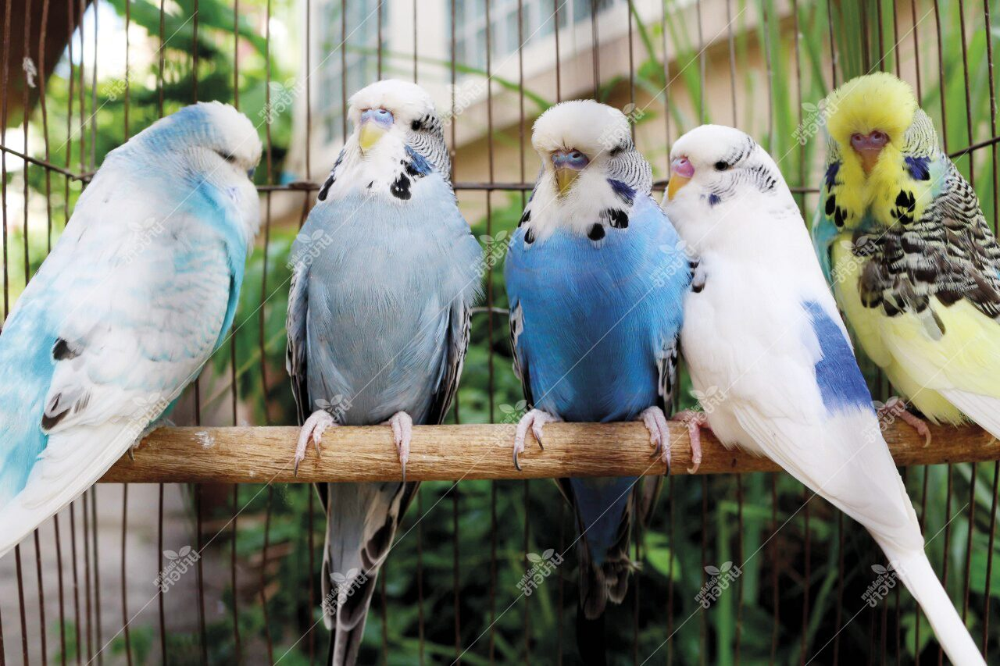
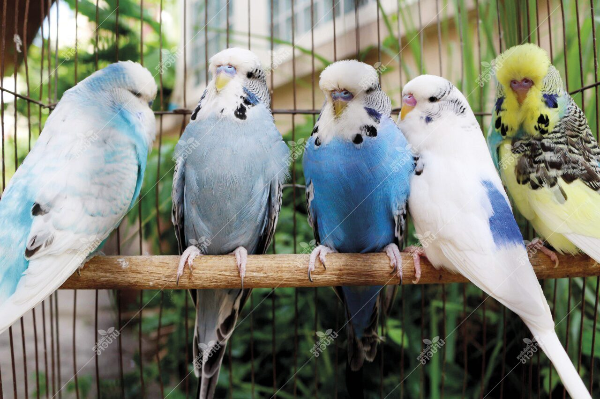

นกแก้วมาคอว์
ลักษณะ: ขนาดใหญ่ สีสันสดใส (น้ำเงิน, เหลือง, แดง) ฉลาดมาก ฝึกพูดได้
นิสัย: ขี้เล่น ชอบเข้าสังคม
ลักษณะ: ขนาดใหญ่ สีสันสดใส (น้ำเงิน, เหลือง, แดง) ฉลาดมาก ฝึกพูดได้
นิสัย: ขี้เล่น ชอบเข้าสังคม
นกค๊อกคาเทล

ลักษณะ: ขนาดเล็กถึงกลาง หงอนตั้งบนหัว สีเหลือง-เทา
นิสัย: รักเสียงเพลง เรียนรู้เสียงและเลียนแบบง่าย
ลักษณะ: ขนาดเล็กถึงกลาง หงอนตั้งบนหัว สีเหลือง-เทา
นิสัย: รักเสียงเพลง เรียนรู้เสียงและเลียนแบบง่าย
นกหงส์หยก

ลักษณะ: ขนาดเล็ก สีสันสดใส (เขียว, น้ำเงิน, เหลือง)
นิสัย: น่ารัก ฝึกพูดง่าย รักความสนุก

ลักษณะ: ขนาดเล็ก สีสันสดใส (เขียว, น้ำเงิน, เหลือง)
นิสัย: น่ารัก ฝึกพูดง่าย รักความสนุก